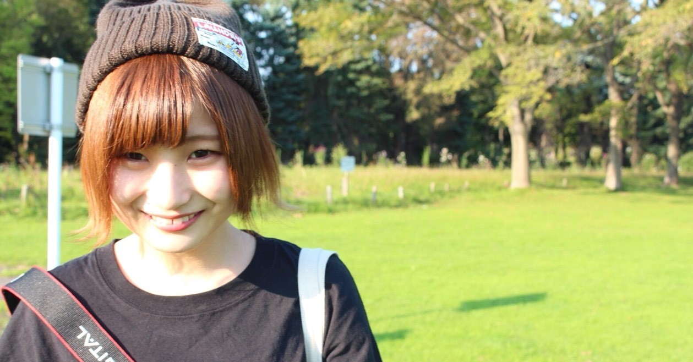

Motto
Profile
Works
Contact
きのポートフォリオ

MOTTO
モットー
やらないは損。なんでもやってみる。
友達に一緒にやらないかと言われたフリーペーパー制作サークル。
有志で集まって行う運営係。地域の学生同士の交流を促すプロジェクトの協力。
今まで「やりたい」と言って様々なことを経験し、成長できた。
「やらない」と言うのは自分の成長の可能性を0にするということだ。
Profile
プロフィール
木下 唯衣
公立はこだて未来大学 システム情報科学部情報
アーキテクチャ学科 情報デザインコース所属
誕生日 ：1997年10月18日（20歳）
サークル ：軽音学部（ボーカル、ベース）
好きなこと：写真を撮ること、歌うこと
Works
制作作品
課題制作
花ランプシェード
手を近づけて花に水をやると点灯する。
育成ランプシェード 水やりの仕方で花が咲いたり枯れたりする。
MORE
課題制作
20Tray
食事ペースと食事時間をストレスなく適切に導くトレー。
MORE
課題制作
Webサイト改善
既存ウェブサイトを構造化し問題を発見し解決策した。
ワイヤーフレームのストーリボードを書き、モックアップを作成し、
評価実験を行った。
MORE
自主制作
トマトジュース
ポスター、パンフレット
クライアントの制作会社の方と直接ヒアリングし制作した。
実際に店舗などで使用された。
MORE
自主制作
iPhoneケース
自分用に制作。
シンプルなデザインの中に、強い意味が詰まっている。
MORE
Contact
連絡先
お問い合わせはメール、SNSもしくは、お問い合わせフォームへ